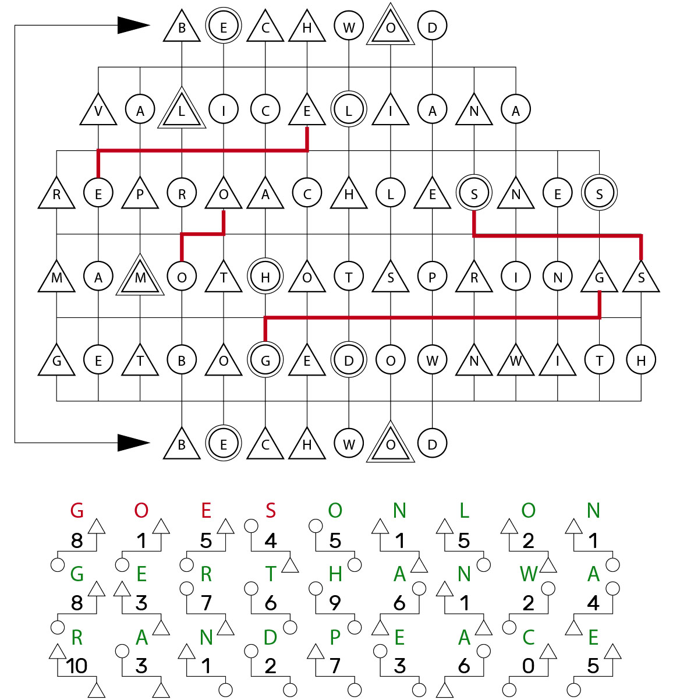

The answers that go with this meta are:
| Puzzle | Answer |
|---|---|
| Oxford Children’s Dictionary | BEECHWOOD |
| A Wrinkle in Time | GET BOGGED DOWN WITH |
| Dinotopia | MAMMOTH HOT SPRINGS |
| The Adventures of Pinocchio | REPROACHLESSNESS |
| Your Name is a Song | VALLICELLIANA |
Each of the answers in this round has two sets of doubled letters. Place the answers in the diagram such that the spaces with doubled circles or triangles are doubled letters. Then, using the symbols at the bottom, find locations in the main grid where the shapes match the symbol, the distance between them matches the number in the symbol, and the letters in the shapes are the same. For example, the first symbol is a triangle on one row, then 8 steps to the left, then a circle on the next row. The only place this occurs is in the grid -- a triangle in one row with a circle 8 steps to the left in the next row, both containing the same letter -- is the G in MAMMOTH HOT SPRINGS connecting to a G in GET BOGGED DOWN WITH. The image on this page calls out this step for the first 4 symbols in the completed grid. Extracting a letter this way for each symbol underneath the main grid (each can only be done in one way) spells out the answer.
